1. What a public DNS zone is
A DNS zone holds the records for one domain: which IP address www points to, where mail goes, and so on. A public DNS zone in Azure hosts those records on Microsoft's global name servers, so anyone on the internet can look them up.
Two points are worth settling early:
- Azure DNS is a hosting service, not a registrar. You register the domain somewhere else, then tell that registrar to send DNS queries to Azure.
- Public and private zones are different resources. A private zone answers only inside linked virtual networks. A public zone answers the whole internet.
| Public DNS zone | Private DNS zone | |
|---|---|---|
| Who can query it | Anyone on the internet | Only linked virtual networks |
| Typical records | Websites, APIs, mail | VMs, databases, private endpoints |
| Needs a registered domain | Yes | No, any name you choose |
| Needs delegation | Yes, at the registrar | No, VNet links instead |
| Auto-registration of VMs | No | Yes |
2. How delegation works
Creating a zone in Azure does nothing on its own. The internet finds a domain by following referrals from the top of the DNS tree downwards, so the parent domain must point at Azure's name servers. That pointer is called delegation.
3. Lab setup
| Item | Value |
|---|---|
| Domain | snvcloud.dpdns.org, a free name from DigitalPlat FreeDomain |
| Resource group | scslabs-rg |
| Web server | scsubtusrv01, Ubuntu, with a public IP address |
| Client for testing | My laptop, outside Azure |
Prerequisites: a domain you control with the ability to change its name servers, an Azure subscription, and a VM with a public IP if you want to serve a page.
4. Part 1: Create the zone
Step 1Open Public DNS zones
In the portal, search for DNS zones. There are none yet. Click Create.
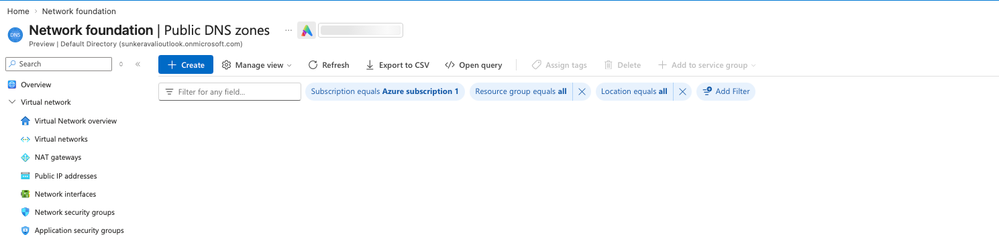
Step 2Name the zone after the domain
The zone name must be exactly the domain name. Leave the child zone box unticked, because the parent, dpdns.org, is not hosted in my Azure DNS.
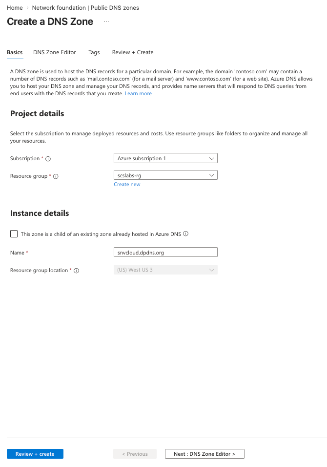
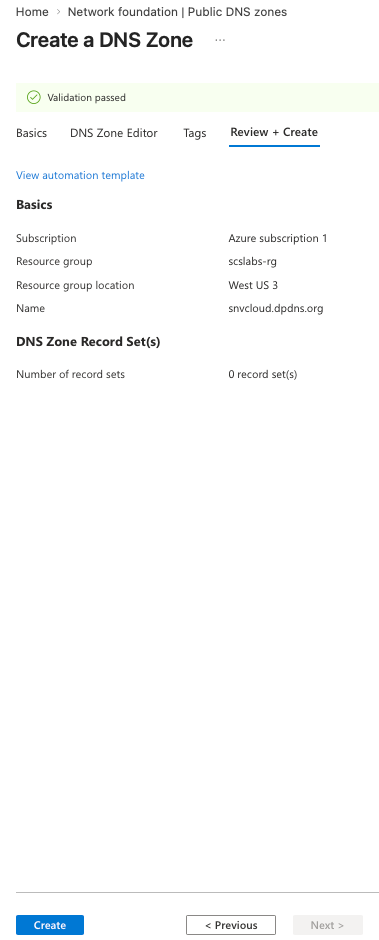
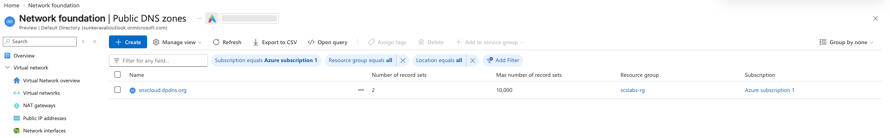
Step 3Note the four name servers
Open the zone. The overview lists the name servers Azure assigned to it.
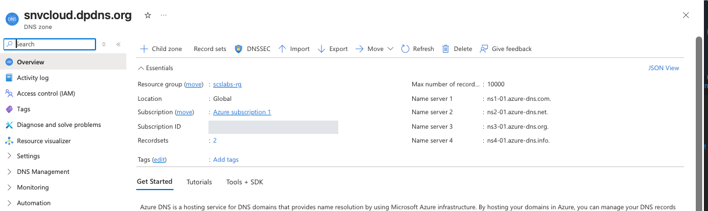
The same four appear in the zone's NS record, alongside the SOA record. These two record sets are created with every zone and should be left alone.
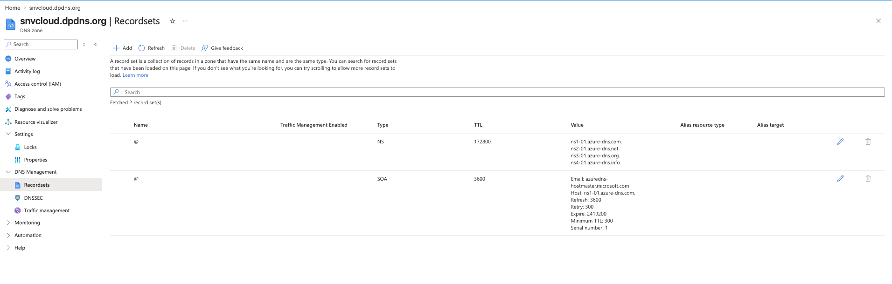
5. Part 2: Delegate the domain to Azure
Step 4Set the name servers at the registrar
In the DigitalPlat dashboard, open the domain, go to DNS → Nameservers, and enter the four Azure name servers without the trailing dot.
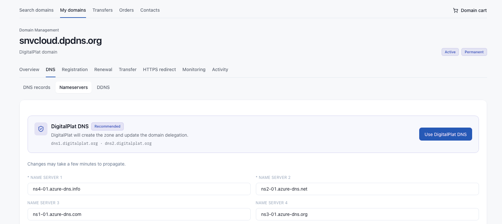
Step 5Confirm the delegation has spread
A propagation checker asks resolvers around the world for the domain's NS records. Every location returned the Azure name servers within a few minutes.
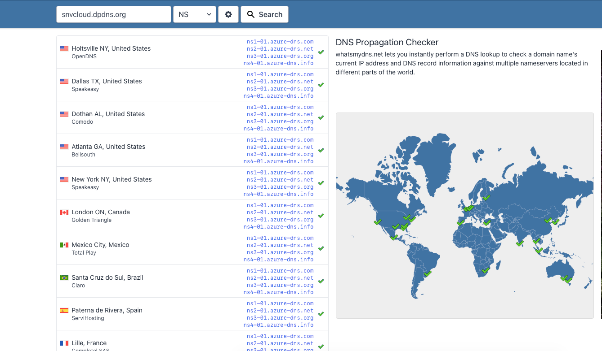
6. Part 3: Put a web server behind the name
DNS only maps a name to an address. To see something at that address, I installed a web server on the VM.
Step 6Install Apache
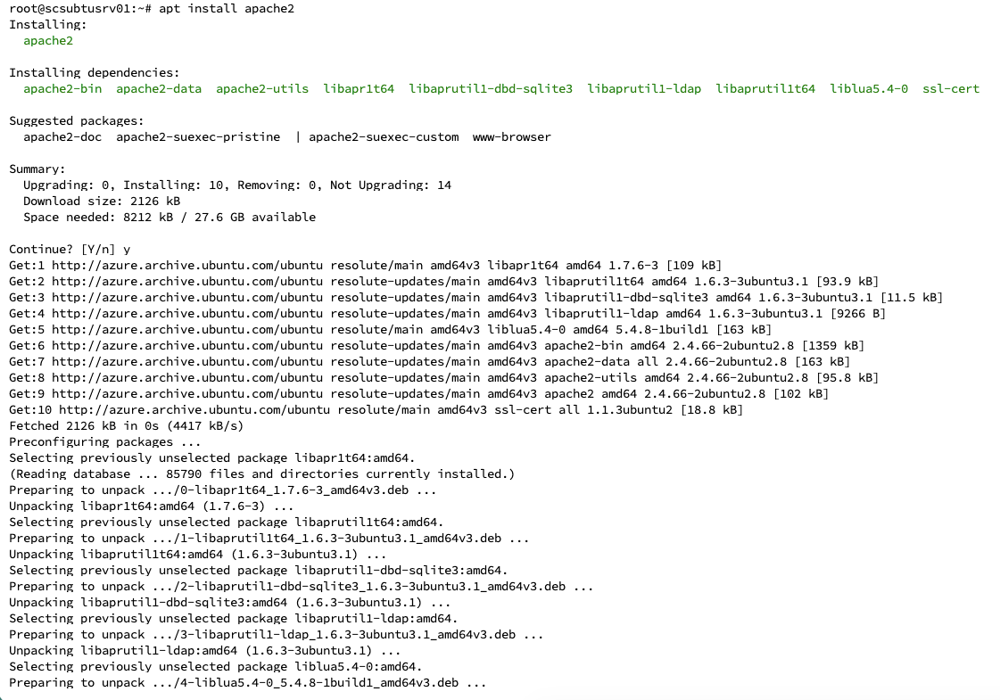
apt install apache2.Step 7Allow HTTP through the network security group
On the VM, open Networking → Network settings and add an inbound rule for port 80.
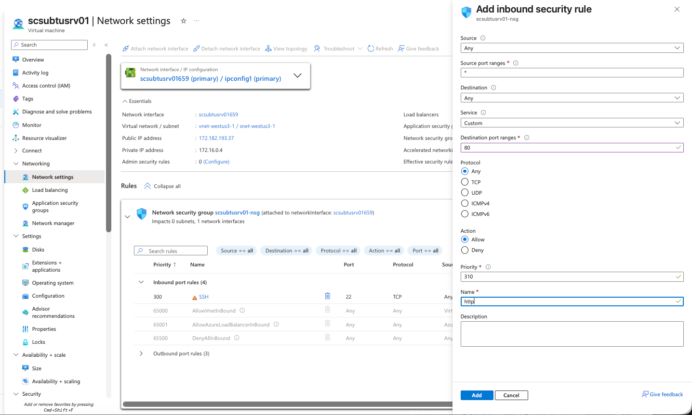
Step 8Test by IP address first
Before involving DNS, browse to the VM's public IP. If this fails, the problem is the web server or the NSG, not DNS.
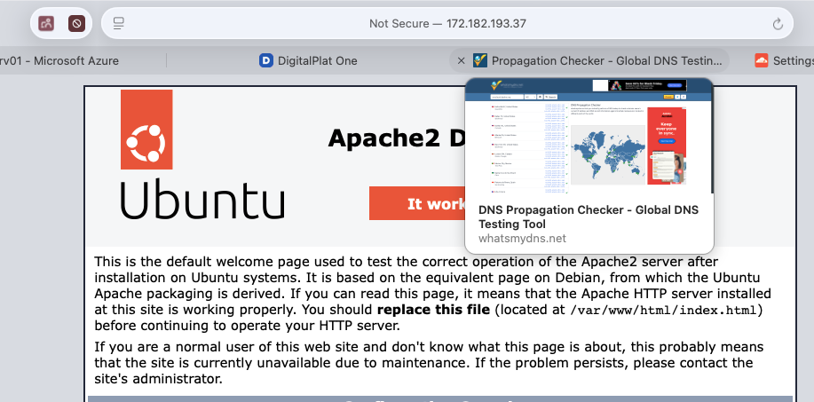
7. Part 4: Add records and test
Step 9Add an A record
In the zone, open Recordsets → Add. Name the record www, choose type A, and enter the VM's public IP.
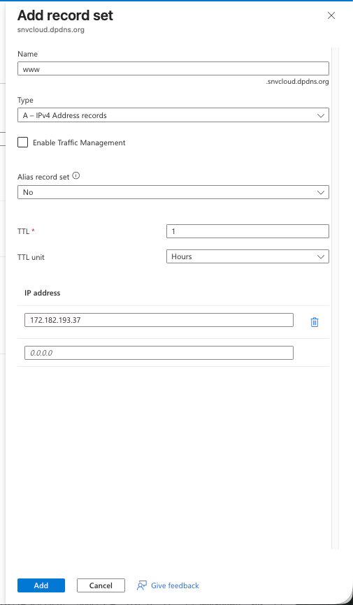
www with a TTL of 1 hour.I also added a TXT record on the domain itself, as a harmless second record to test with.
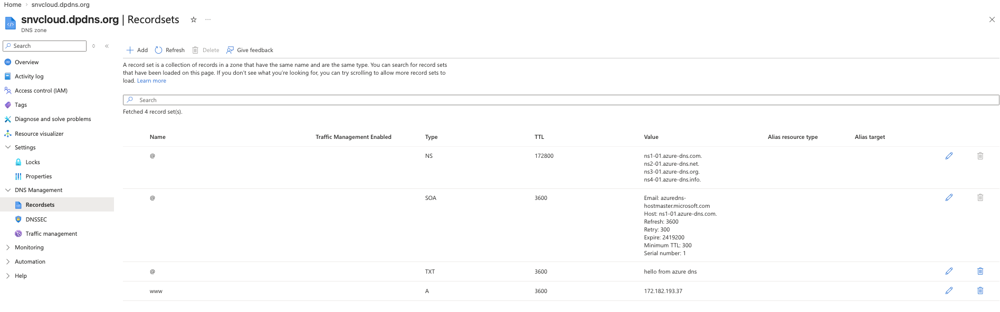
@, and the A record for www.Step 10Look the records up from outside Azure
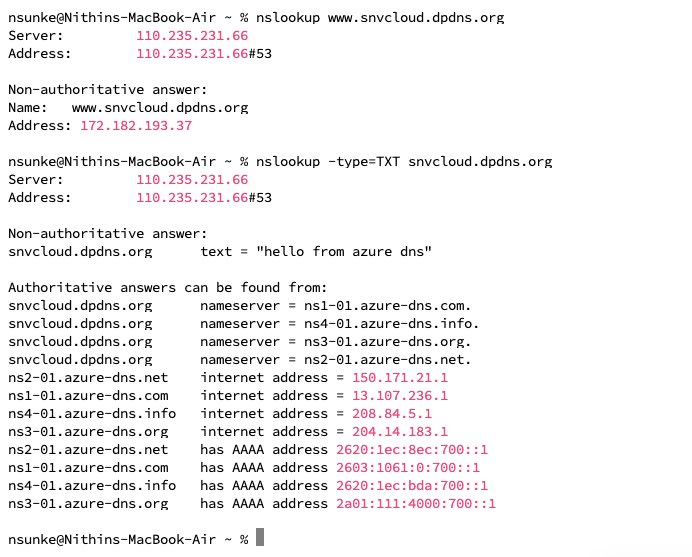
Step 11Open the site by name
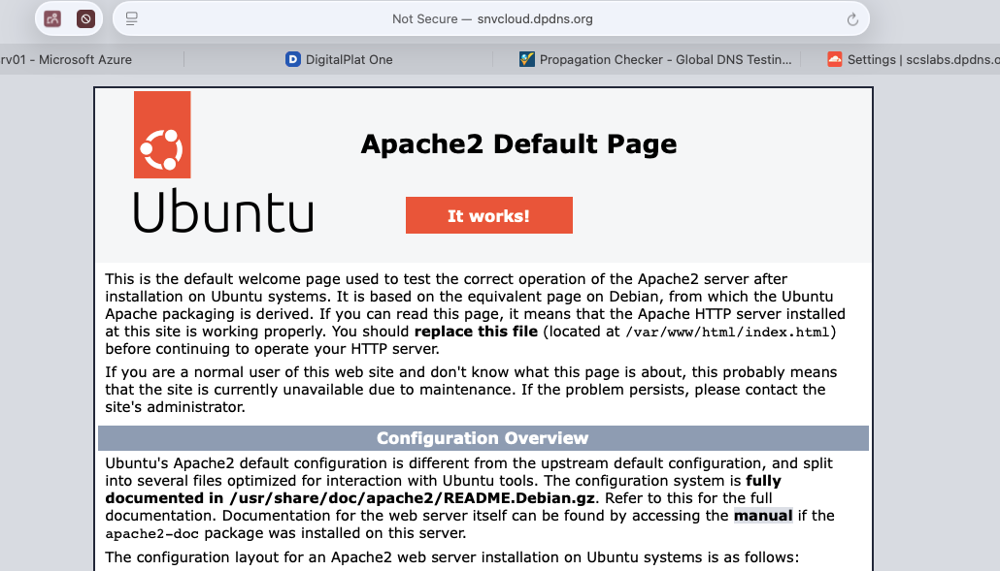
www prefix in the address bar.8. Record types at a glance
| Type | Purpose | Example |
|---|---|---|
| A | Name to IPv4 address | www → a public IP |
| AAAA | Name to IPv6 address | www → an IPv6 address |
| CNAME | Alias to another name | blog → myapp.azurewebsites.net |
| MX | Mail servers for the domain | @ → 10 mail.example.com |
| TXT | Free text: domain verification, SPF, DKIM | @ → v=spf1 ... |
| NS | Name servers for the zone, or delegation of a child zone | dev → another zone's name servers |
| CAA | Which certificate authorities may issue certificates | @ → 0 issue "letsencrypt.org" |
| Alias (Azure) | An A, AAAA or CNAME record that follows an Azure resource | @ → a public IP resource |
@ stands for the domain itself. A CNAME cannot be placed on @, which is one reason alias records exist.
9. Troubleshooting
| Symptom | Likely cause | What to check |
|---|---|---|
| Name does not resolve anywhere | Delegation missing or wrong | NS lookup of the domain returns the Azure name servers from your zone |
| Azure answers directly, but public resolvers do not | Registrar still points elsewhere, or the change has not spread | Name servers at the registrar; wait and retry |
| Resolves to an old IP | Cached answer, up to the record's TTL | Query the Azure name server directly; flush the local DNS cache |
| Resolves, but the page does not load | NSG, web server or VM issue | Browse by IP; inbound rule for port 80; systemctl status apache2 |
Works on www but not on the bare domain | No record on @ | Add an A or alias record for @ |
| Record stops working after a VM restart | Dynamic public IP changed | Make the public IP static, or use an alias record |
# Ask Azure's name server directly (bypasses caching and delegation)
nslookup www.snvcloud.dpdns.org ns1-01.azure-dns.com
# Ask a public resolver (tests the full path)
nslookup www.snvcloud.dpdns.org 8.8.8.8
# Check the delegation
nslookup -type=NS snvcloud.dpdns.org 8.8.8.8
# Check the web server separately from DNS
curl -I http://172.182.193.37The first two commands are the key pair. If the first works and the second does not, the zone is fine and the delegation is the problem.
10. Best practices
Delegation and records
- Enter all four name servers at the registrar, exactly as Azure lists them.
- Leave the default NS and SOA records alone.
- Plan TTLs. Use a longer TTL, such as an hour, for stable records. Before a planned change, lower the TTL a day ahead so the switch takes effect quickly, then raise it again.
- Use alias records for Azure resources. An alias to a public IP, Traffic Manager profile or Front Door updates itself when the resource changes, and it works on the bare domain.
- Use static public IPs for anything a record points at.
- Delete records when you delete resources. A record left pointing at a released IP or a deleted app can be claimed by someone else, who then serves content on your name. This is known as subdomain takeover.
Security and governance
- Keep internal names out of public zones. Everything here is visible to the world. Private IPs and internal hostnames belong in a private zone.
- Lock the zone. Add a CanNotDelete resource lock so the zone cannot be removed by accident.
- Grant least privilege. Give DNS administrators the DNS Zone Contributor role on the zone rather than Contributor on the subscription.
- Consider DNSSEC. Azure can sign a public zone so resolvers can verify its answers. It only takes effect if your registrar can publish the DS record in the parent zone.
- Add CAA records to restrict which certificate authorities can issue certificates for the domain.
- Review the activity log for record changes, and alert on unexpected ones.
Operations
- Manage zones as code. Use Bicep, Terraform or CLI scripts so records are reviewed and repeatable.
- Export the zone regularly as a backup:
az network dns zone exportwrites a standard zone file. - Delegate child zones such as
dev.snvcloud.dpdns.orgto separate teams or environments, so each manages its own records. - Serve the site over HTTPS once DNS works. A free Let's Encrypt certificate is enough for a lab.
11. Pros and cons of Azure public DNS
Pros
- Global anycast name servers, so queries are answered from a nearby location
- Very high availability, backed by a Microsoft service level agreement
- Same portal, CLI, access control, locks and activity log as every other Azure resource
- Alias records that follow Azure resources automatically
- Fits infrastructure as code and deployment pipelines
- Low cost: a small monthly fee per zone plus a charge per million queries
- DNSSEC signing available
- Public and private zones managed with the same tooling
Cons
- Not a registrar, so the domain must be bought and renewed elsewhere
- Not free, unlike the basic plans of some DNS providers
- DNS only: no bundled CDN, web firewall or proxy on the name
- No zone transfers to or from other DNS servers
- No URL redirect records; redirects need a web server or Front Door
- Advanced routing such as geographic or weighted answers relies on Traffic Manager
- DNSSEC depends on the registrar supporting it for your domain
When it fits: your workloads already run in Azure and you want DNS under the same access control, automation and audit trail. When to look elsewhere: you want registration, DNS, CDN and web firewall from a single provider, or a free tier for a hobby domain.
12. Azure CLI version
# Create the zone
az network dns zone create \
--resource-group scslabs-rg \
--name snvcloud.dpdns.org
# Show the name servers to enter at the registrar
az network dns zone show \
--resource-group scslabs-rg \
--name snvcloud.dpdns.org \
--query nameServers --output tsv
# A record for www
az network dns record-set a add-record \
--resource-group scslabs-rg \
--zone-name snvcloud.dpdns.org \
--record-set-name www \
--ipv4-address 172.182.193.37
# TXT record on the domain itself
az network dns record-set txt add-record \
--resource-group scslabs-rg \
--zone-name snvcloud.dpdns.org \
--record-set-name "@" \
--value "hello from azure dns"
# Protect the zone from accidental deletion
az lock create \
--name dns-nodelete \
--lock-type CanNotDelete \
--resource-group scslabs-rg \
--resource-name snvcloud.dpdns.org \
--resource-type Microsoft.Network/dnszones
# Back up the zone to a file
az network dns zone export \
--resource-group scslabs-rg \
--name snvcloud.dpdns.org \
--file-name snvcloud.zone13. Cost and clean-up
A public zone is billed per zone per month, plus a charge per million queries. A lab zone costs well under a dollar a month. The VM and its public IP cost far more, so stop or delete those when you finish. Check the Azure DNS pricing page for current rates.
Key takeaways
- A public DNS zone hosts a domain's records on Azure's global name servers. Azure does not register domains.
- The zone only goes live when the registrar delegates the domain to the zone's four name servers.
- Test in layers: the web server by IP, then Azure's name server directly, then a public resolver.
- Keep public zones clean: no internal names, no records pointing at resources that no longer exist.
- Azure DNS suits teams already in Azure; it is not a bundled registrar, CDN and firewall service.